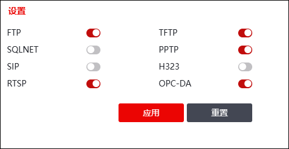

ALG（Application Level Gateway，应用层网关），主要实现对应用层报文的检测与处理，可解决因数据报文应用层存在某些重要数据导致的报文投递错误、不合法报文逃逸等问题。
例如，正常情况下，对于NAT功能，NAT只对报文头中网络层IP地址和传输层端口信息进行转换，不对应用层数据载荷中的字段进行分析。此时，某些协议应用层中可能存在的需要转换的地址、端口等信息不能被NAT进行有效的转换，就可能导致问题。
另外，对于多连接协议，其子连接通信的地址和端口由父连接协商获得，且自动协商的子连接的通信地址和端口存在于父连接数据报文的应用层中，如果NGFW不对多连接协议的应用层进行检测，无法获取子连接信息，不能对子连接进行安全控制。
NGFW通过支持ALG功能，对应用层进行检测、分析和处理，可以解决上述问题。例如，对于FTP协议，FTP子连接（数据连接）通信的地址和端口是通过FTP父连接（控制连接）协商获得，FTP父连接需由安全策略引擎处理时，其子连接也需要由相应的安全策略处理。NGFW启用FTP协议的ALG功能后，可对父连接和子连接均进行安全控制，处理父连接和子连接的流程为：
1）解析FTP的父连接的应用层数据，获取到FTP子连接通信的目的地址和目的端口，并通过FTP父连接IP报头获取FTP子连接相应的源地址等信息；
2）根据获取的FTP协议子连接的源地址、目的地址和端口等信息创建一个期待连接，并将该期待连接添加到期待连接表中；
3）在期待连接中记录标记和期待连接通过安全引擎时所需要用到的地址、端口；
4）FTP协议子连接报文到来时，NGFW会根据子连接的源地址、目的地址和目的端口查询期待连接表，如果子连接匹配期待连接，则根据期待连接处理子连接（期待连接对应的规则根据父连接规则自动生成）。
|
²NGFW处理多连接协议时，根据对父连接进行解析而自动生成相应的子连接规则，因此，在配置多连接协议的安全策略时，只需考虑父连接如何配置即可。 |

目前NGFW支持进行协议检测的常用应用层协议包括：
lFTP（File Transfer Protocol，文件传输协议）
lTFTP（Trivial File Transfer Protocol，简单文件传输协议）
lSQLNET，一种Oracle 数据库语言
lPPTP（Point-to-Point Tunnling Protocol，点到点隧道协议）
lSIP（Session Initiation Protocol，会话发起协议）
lH.323（包括RAS、H.225、H.245），一种多媒体会话协议
lRTSP（Real Time Streaming Protocol，实时流传输协议）
lOPC-DA（OLE for Process CONtrol-DATA ACCESS），工业协议，在应用程序层实现对不同总线协议的设备进行互操作。
下面介绍如何开启/关闭各协议的ALG功能。
| 步骤1 | 选择 ，如下图所示。 |

| 步骤2 | 点击FTP、TFTP、SQLNET、PPTP、SIP、H323、RTSP、OPC-DA对应的开关，可更改相应协议的ALG启用状态，“”表示启用，“”表示关闭。 |
| 步骤3 | 点击【应用】按钮，完成ALG功能配置。 |
| 步骤4 | （可选）点击【重置】按钮，可以恢复ALG配置为出厂配置。 |